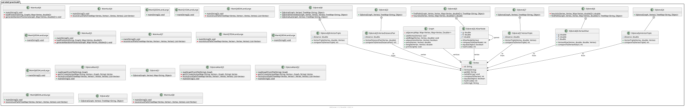

Package ual.eda2.practica02
package ual.eda2.practica02

-
ClassesClassDescriptionClase que implementa el algoritmo de Dijkstra para calcular las distancias más cortas desde un vértice fuente a todos los demás vértices en un grafo ponderado.Clase interna para representar un elemento en la cola de prioridad Cada elemento contiene un vértice y su distancia actualClase interna para representar un elemento en la cola de prioridad Cada elemento contiene el vértice destino (to), la distancia y el vértice origen (from)Clase interna para representar un nodo en el algoritmo A* Almacena información adicional necesaria para A*Clase interna para representar un elemento en la cola de prioridad para A* Cada elemento contiene el vértice destino (to), los valores g, h, f y el vértice origen (from)Clase interna para representar un elemento en la cola de prioridad Cada elemento contiene el vértice destino (to), la distancia y el vértice origen (from)Clase interna para representar un elemento en la cola de prioridad Cada elemento contiene el vértice destino (to), la distancia y el vértice origen (from)Represents a vertex in a graph.